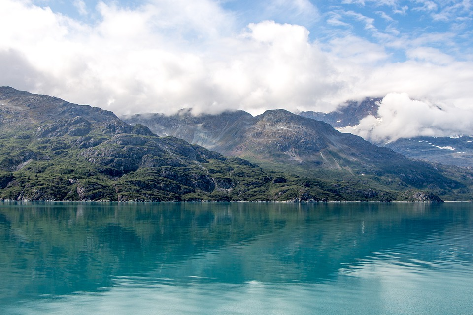
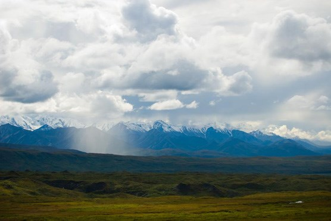

About Alaska Parks
Alaska National Parks provide access to a wealth of natural, cultural, and historic features in a largely untouched setting. The number of tourists visiting Alaska has been steadily increasing over the past 10 years. Visitors come to see the wildlife, mountains, glaciers, and to learn about Alaska's history.
Alaska's spectacular scenery extends from the Inupiat Heritage Center at the rooftop of the world to the Aleutian World War II National Historic area located at Alaska's southern tip.
When planning an Alaska trip, consider the following:
- Alaska contains eight national parks/preserves and four national preserves. Three of the more popular parks are Denali National Park and Preserve, Glacier Bay National Park and Preserve, and Gates of the Arctic National Park and Preserve.
- Caines Head State Recreation area is the site of an abandoned World War II fort. This territory was occupied by Japanese ground forces during World War II.
- Some other interesting sites include the Nancy Lake State Recreation Area, the Totem Bight State Historical Park, which contains a native village model and a number of reconstructed totem poles, and the Alaska Chilkat Bald Eagle Preserve.
- Park entrance fees vary throughout the state and are subject to change.
- Our travel planners are excited to help you plan your vacation to the Alaska National Parks. Please visit our Hotel Reservation page to reserve your stay today!
 